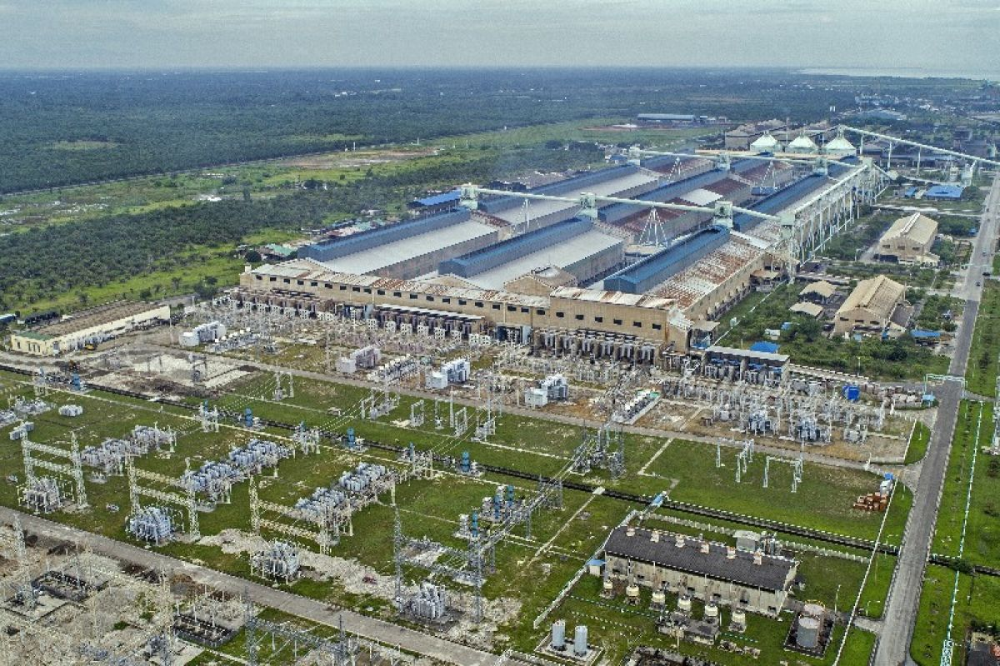
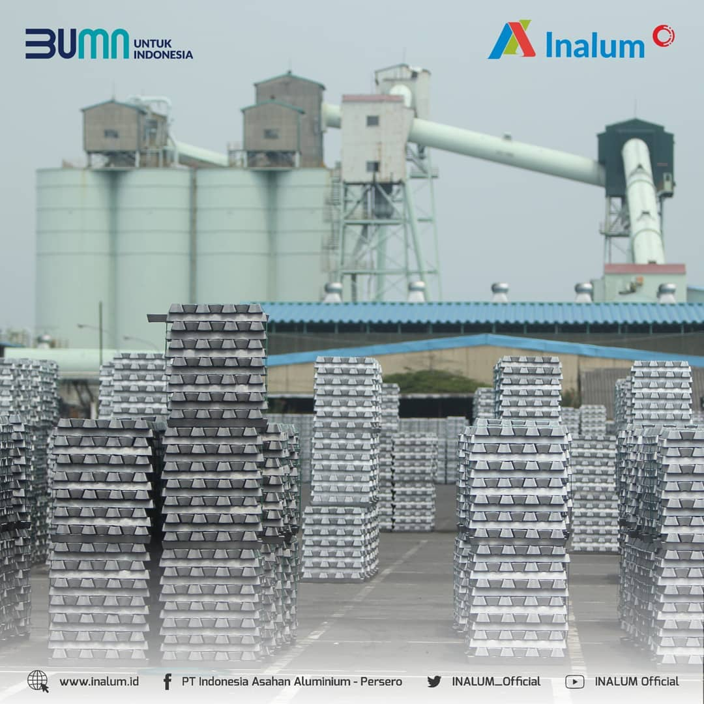
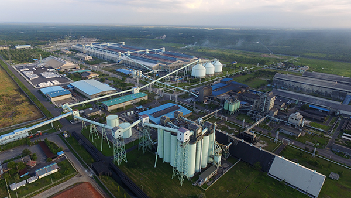
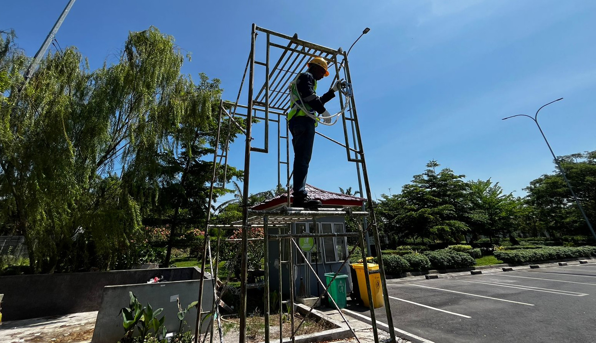
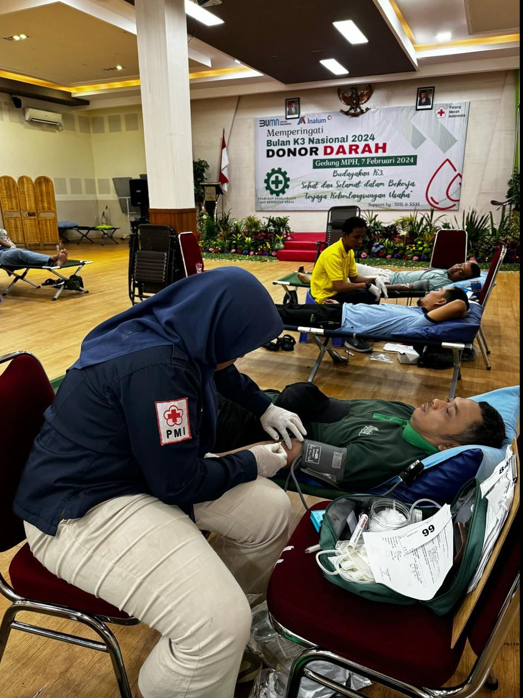
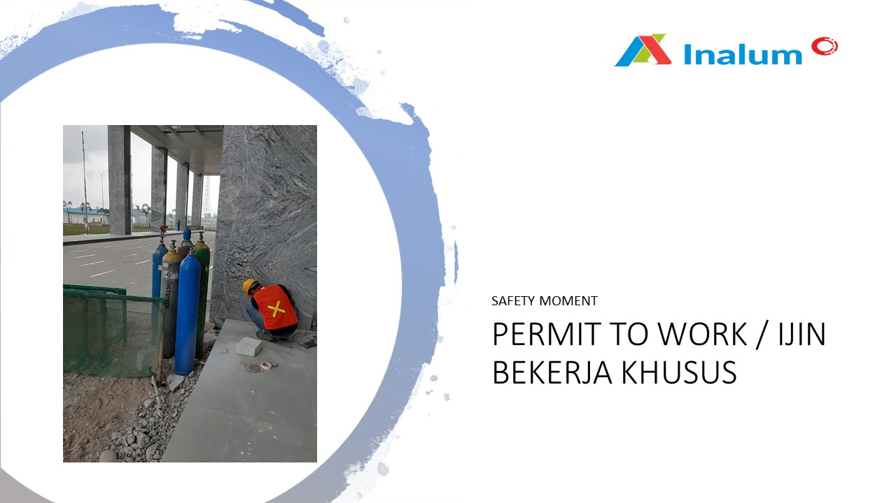
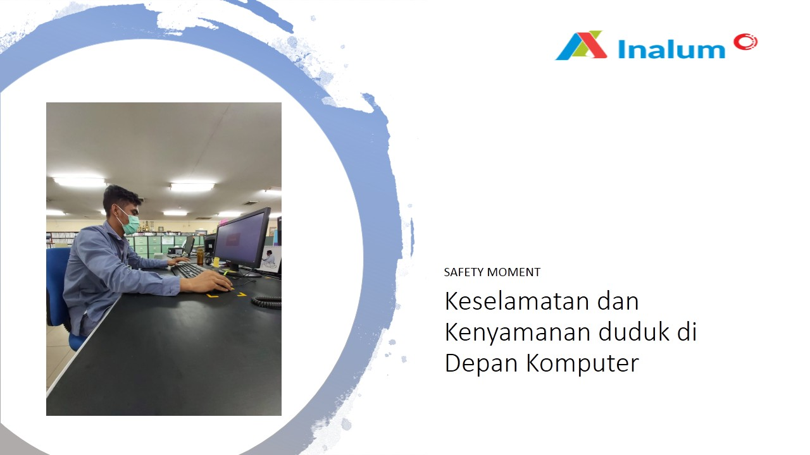
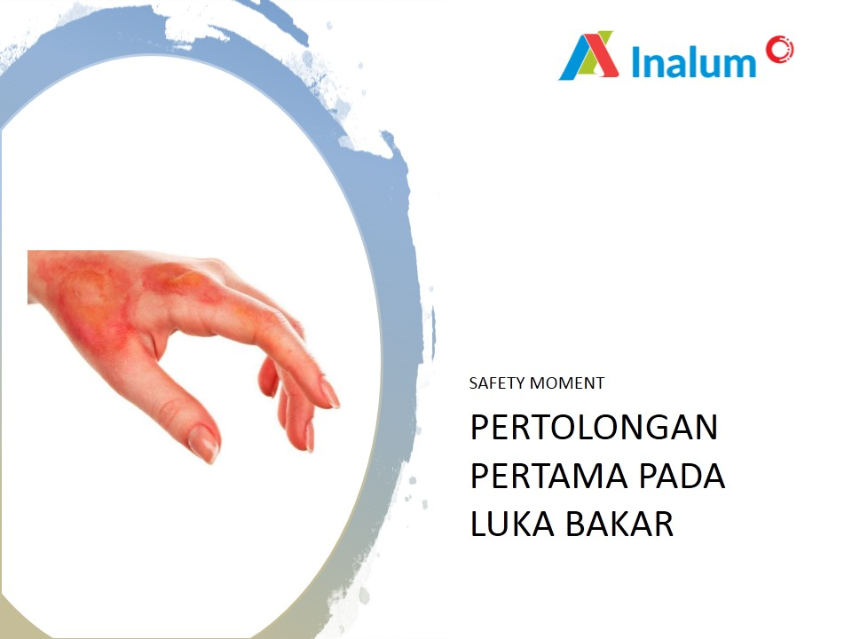

PT Indonesia
Asahan Aluminium (INALUM)
PT Indonesia Asahan Aluminium Perusahaan produsen
aluminium terbesar di Indonesia. INALUM didirikan pada
tahun 1976 dan berpusat di Kabupaten Batubara, Provinsi
Sumatera Utara, Indonesia.

Pentingnya K3 di Lingkungan Industri
Kegiatan industri peleburan aluminium memiliki risiko tinggi. Pelaksanaan K3 menjadi komponen wajib untuk melindungi pekerja dan menjaga keberlangsungan produksi.
Kenapa K3 itu penting?
Kegiatan industri peleburan aluminium mempunyai bahaya khusus seperti paparan panas ekstrem, kebisingan tinggi, radiasi lokal, paparan bahan kimia dan debu logam, serta potensi kecelakaan mekanis. Oleh karena itu, penerapan K3 bukan pilihan — melainkan kewajiban.
- ✔ Mencegah kecelakaan & penyakit akibat kerja
- ✔ Melindungi tenaga kerja & fasilitas produksi
- ✔ Menjamin proses produksi berjalan efisien
- ✔ Menciptakan budaya kerja yang aman & peduli keselamatan
Komitmen INALUM
INALUM berkomitmen menerapkan SMK3 (PP No.50/2012) dan ISO 45001:2018, dengan aksi nyata sebagai berikut:
- Pelatihan & sertifikasi K3 untuk seluruh level pekerja
- Penyediaan APD standar industri & pemeriksaan rutin
- Inspeksi, audit, dan monitoring kinerja K3 secara berkelanjutan
- Emergency response, firefighting, & first aid readiness
- Zero tolerance terhadap pelanggaran keselamatan
Penerapan SMK3
Sistem manajemen sesuai PP 50/2012 & ISO 45001.
Pelatihan & Kompetensi
Pelatihan rutin untuk pekerja & kontraktor.
Inspeksi & Audit
Audit internal & eksternal untuk perbaikan berkelanjutan.
Fasilitas Kesehatan Kerja
Klinik & layanan P3K on-site untuk respons cepat.
Kontrol Kebisingan
Monitoring & proteksi pendengaran sesuai standar.
Manajemen Risiko
Identifikasi risiko & pengendalian teknis/organisasional.

“Safety First, Productivity Follows”
INALUM berkomitmen menciptakan tempat kerja tanpa kecelakaan dengan melibatkan seluruh karyawan menjaga keselamatan diri dan rekan kerja.
Pelajari Komitmen K3 KamiFasilitas & Program K3 INALUM
Penunjang keselamatan dan kesehatan kerja seluruh karyawan
Aktivitas dan Infromasi
Kegiatan dan Inisiatif K3 PT INALUM

INALUM Laksanakan Pelatihan Teknisi K3 Ketinggian untuk Pemuda Sekitar
Pelatihan teknisi K3 ketinggian diselenggarakan untuk meningkatkan kompetensi pemuda di sekitar perusahaan.

Tutup Bulan K3 2024, INALUM Gelar Donor Darah di Tanjung Gading
Sebagai bagian dari rangkaian acara Bulan K3, INALUM menyelenggarakan donor darah di Tanjung Gading.
Inalum Contractor Management System for Environtment, Safety and Health (ICMESH)
System yang diperuntukan menilai calon kontraktor/ kontraktor yang telah bekerjasama dengan PT inalum (Persero) dalam penerapan K3LH di lingkungan kerja PT Inalum (Persero)
Penerapan 5R di Tempat Kerja (Ringkas, Rapi, Resik, Rawat, Rajin)
Standar 5R dapat menjadi fondasi penting dan krusial dalam menentukan sehat dan produktifnya suatu perusahaan.

Safety Moment - Permit to Work
Izin tambahan atau pemeriksaan untuk beberapa pekerjaan dengan potensi dan risiko bahaya tinggi.
Safety Moment - Menghadapi Kecapaian di Tempat Kerja
Bagaimana menghadapi kecapaian ketika di tempat kerja

Safety Moment - Keselamatan dan Kenyamanan Duduk
Keselamatan dan kenyamanan duduk sangat penting untuk mencegah cedera dan meningkatkan produktivitas kerja.

Safety Moment - Pertolongan Pertama Pada Luka Bakar
Pertolongan pertama pada luka bakar sangat penting untuk mengurangi rasa sakit, mencegah infeksi, dan mempercepat proses penyembuhan.